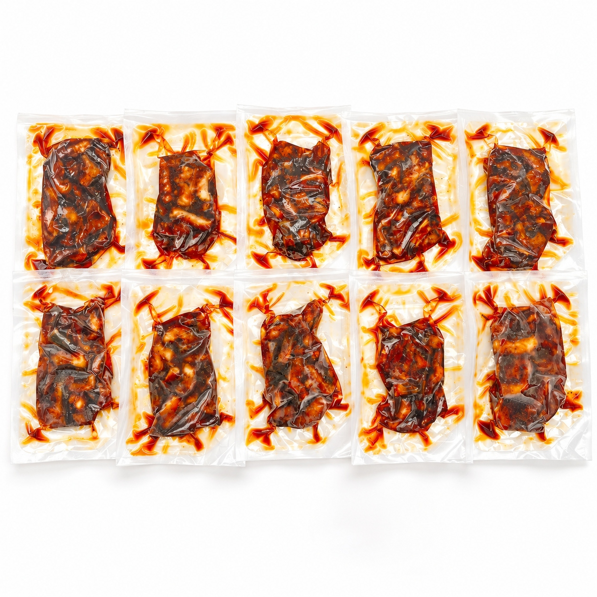
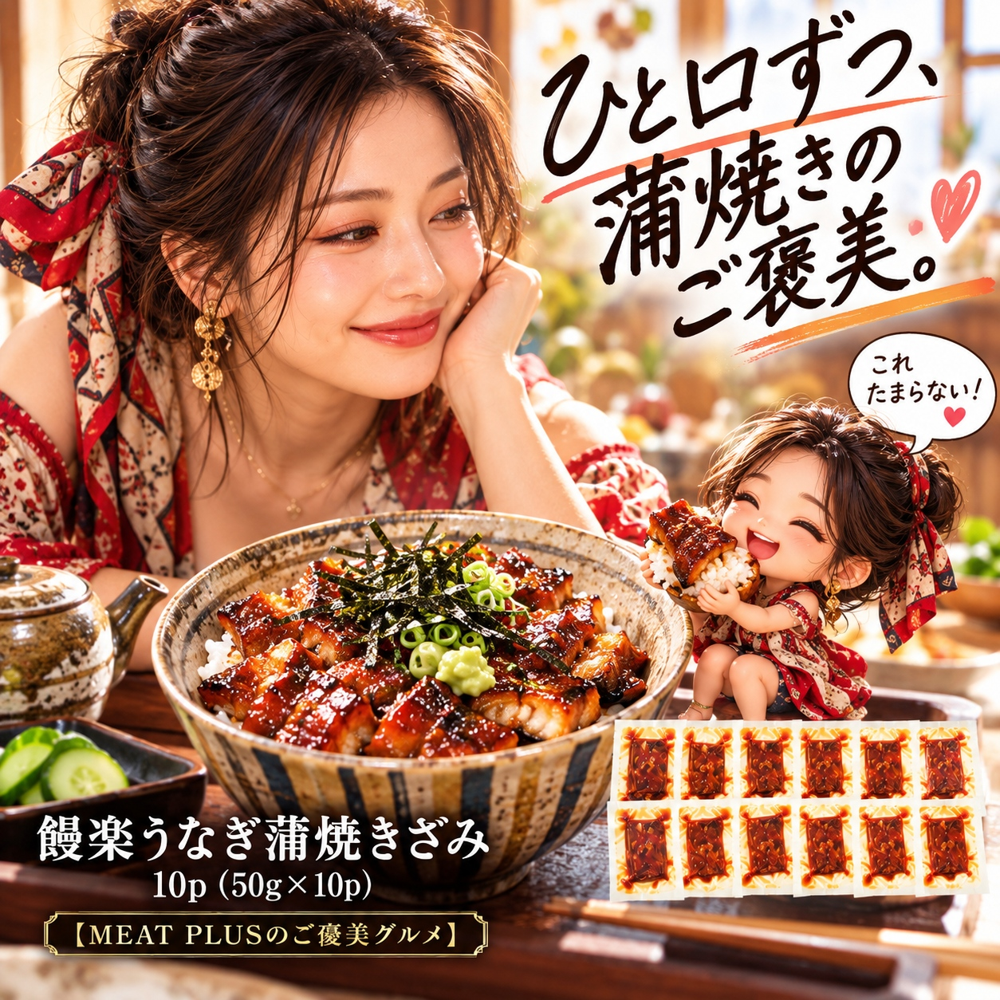
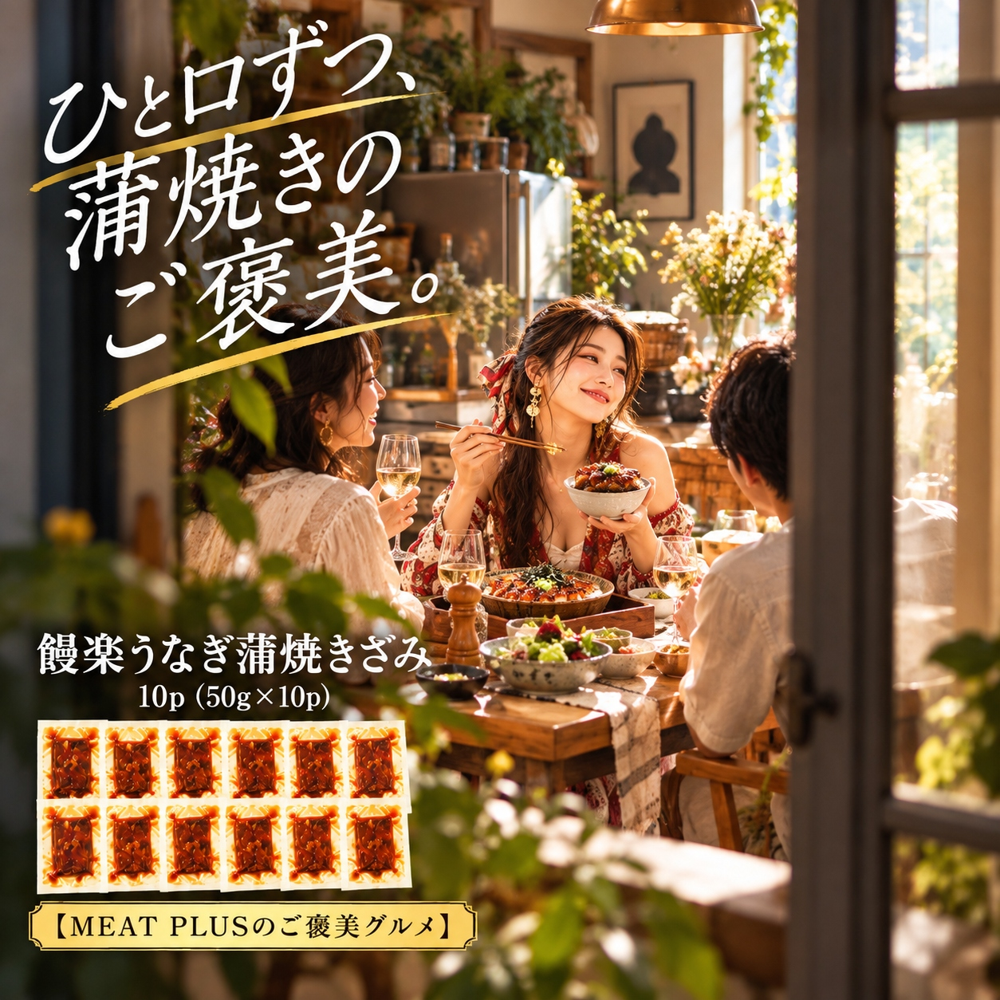

SCENE 01
M005

m 贈り物
饅楽うなぎ蒲焼きざみ 10ｐ
【九州産うなぎの旨味を食卓へ。湯せん5分の簡単ごちそう。】
- 内容量10ｐ（50ｇ×10ｐ）
- 保存冷凍
- 産地日本
商品の特徴を読む
温かいご飯の上に、ふっくらと柔らかな九州産のうなぎ。甘辛い秘伝のタレが絡んだきざみ蒲焼きを乗せれば、あっという間に専門店の味がお楽しみいただけます。厳選された九州産のうなぎを、職人が一尾一尾丁寧に焼き上げ、食べやすいきざみタイプに仕上げました。長年受け継がれてきた秘伝のタレが、うなぎ本来の旨味を最大限に引き立てます。使いやすい50gずつの真空個包装なので、食べたい時に食べたい分だけ、いつでも新鮮な味わいを。冷凍庫にストックしておけば、忙しい日の夕食や、急なお客様のおもてなしにも大変便利です。調理は湯せんで約5分と、手間いらずなのも嬉しいポイントです。ご自宅用はもちろん、大切な方への贈り物としても大変喜ばれる一品です。ご家族皆様で、饅楽自慢のうなぎ蒲焼きをご賞味ください。今日の食卓が、少し特別なひとときになりますように。
公式サイトへ移動します。価格・在庫・配送条件は移動先で最終確認してください。

SCENE 02
厳選された九州産のうなぎを、職人が一尾一尾丁寧に焼き上げ、食べやすいきざみタイプに仕上げました。

SCENE 03
冷凍庫にストックしておけば、忙しい日の夕食や、急なお客様のおもてなしにも大変便利です。
PRODUCT INFORMATION
購入前に確認したい商品情報
- 商品名
- 饅楽うなぎ蒲焼きざみ 10ｐ
- 商品規格
- 10ｐ（50ｇ×10ｐ）
- 保存方法
- 冷凍
- 原産国
- 日本
- 製造地
- 日本
- 賞味期限
- 発送日より3ヶ月
原材料
うなぎ蒲焼(うなぎ(九州産)、醤油(小麦·大豆を含む)、味酵、発酵調味料、砂糖/増粘剤(加工澱粉))
FAQ
購入前のよくあるご質問
湯せん以外の調理方法はありますか？
電子レンジでも調理可能ですが、湯せんの方がよりふっくらと仕上がりますのでおすすめです。電子レンジをご利用の場合は、必ず袋から耐熱皿に移し、ラップをかけて温めてください。加熱時間は機種により調整をお願いいたします。
贈り物として送りたいのですが、のしなどの対応は可能ですか？
はい、ギフト対応も承っております。ご注文手続きの際に、のしの種類や名入れのご希望などをご指定いただけますと幸いです。大切な方への贈り物として、心を込めてご用意させていただきます。
MEAT PLUS OFFICIAL SHOP
【九州産うなぎの旨味を食卓へ。湯せん5分の簡単ごちそう。】
仕入れ・加工・梱包・発送まで自社で行うMEAT PLUSの公式オンラインショップでご注文いただけます。
公式オンラインショップで購入する